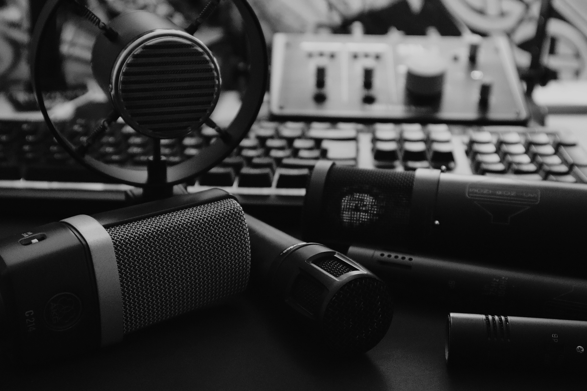
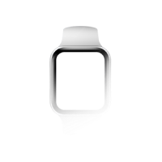

Iberian Portuguese voice over talent for TV, commercials, radio, podcasts, documentary, e-learning and corporate projects.
Professional voice over artist with professional studio and Source Connect.
Wich voice tone do you need for your project?
I can get you: relaxed, warm, authentic. friendly, light-hearted,
relatable, approachable, informative,trustworthy,
serious or authoritative.
I'll be using my professional Neumann U87 microphone, Universal Audio pre amps and conversion, Mac Pro and Windows platforms, and Cubase software to produce your voice over project.
Remote record using Source Connect, Source Connect Now, Cleanfeed, Audio TX or direct me over Zoom, Skype, Meet, Teams.....or even by phone!
Iberian/European Portuguese male voice over artist Ricardo Soares.
I'm available to record 24h, every day, in my own professional recording studio.
